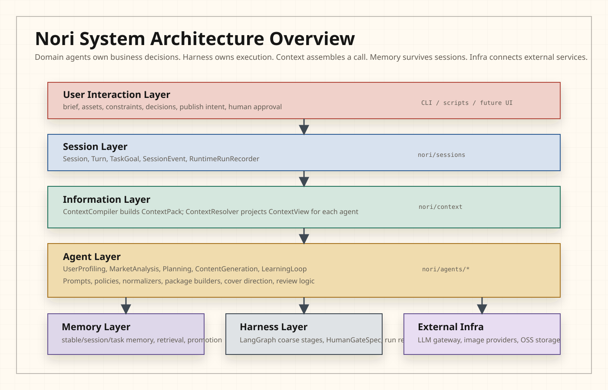
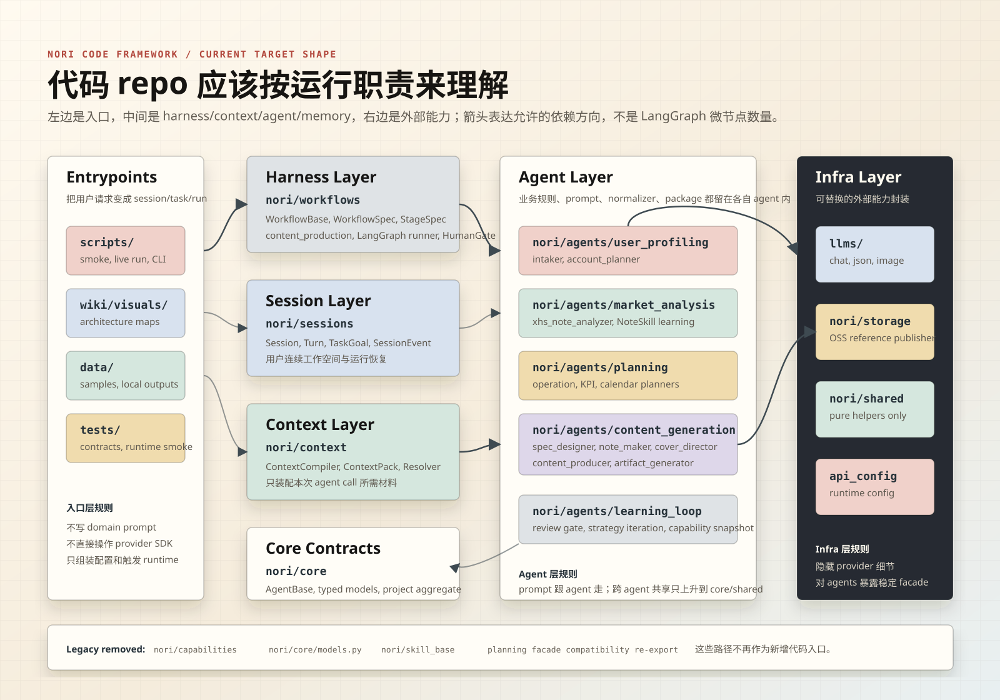
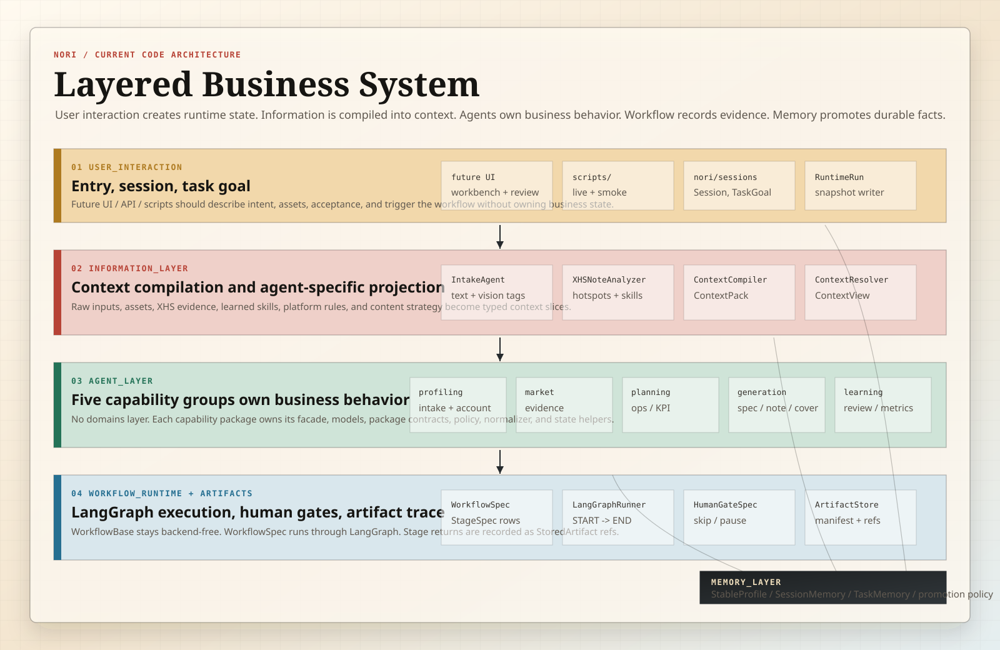
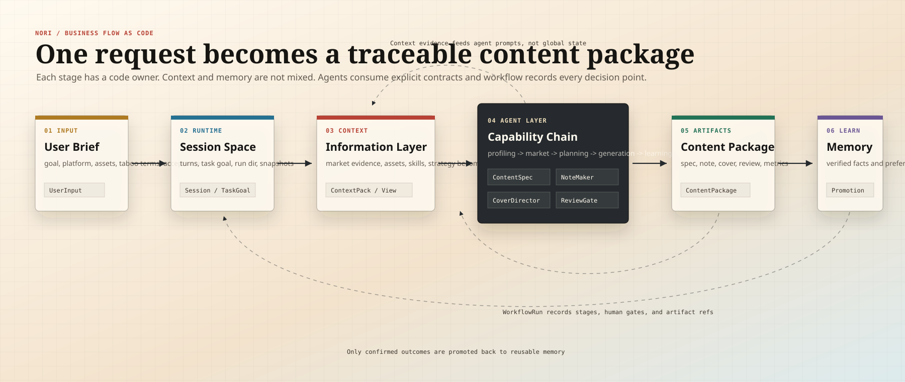
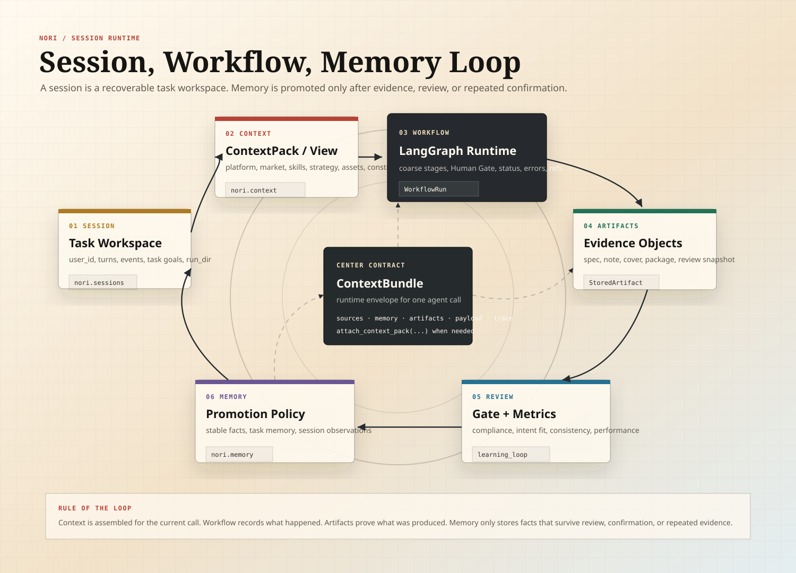

Nori SVG diagrams
Architecture Gallery
五张可独立使用的 SVG：系统总览、代码框架、分层代码架构、业务流程主线、Session/Workflow/Memory 闭环。可直接嵌入文档、wiki、README 或产品说明页。
wiki/visuals/svg/nori-system-overview.svg

wiki/visuals/svg/nori-code-framework.svg

wiki/visuals/svg/nori-layered-code-architecture.svg

wiki/visuals/svg/nori-business-flow.svg

wiki/visuals/svg/nori-session-memory-loop.svg
